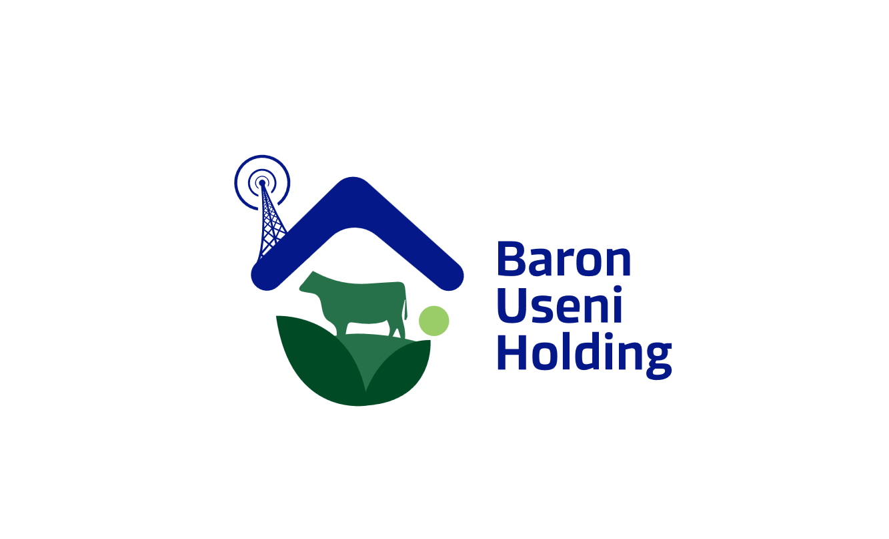
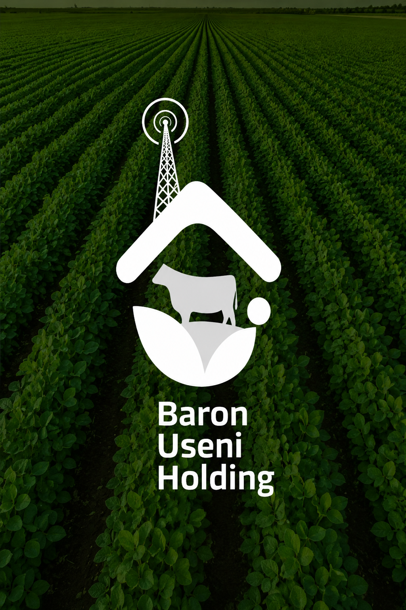
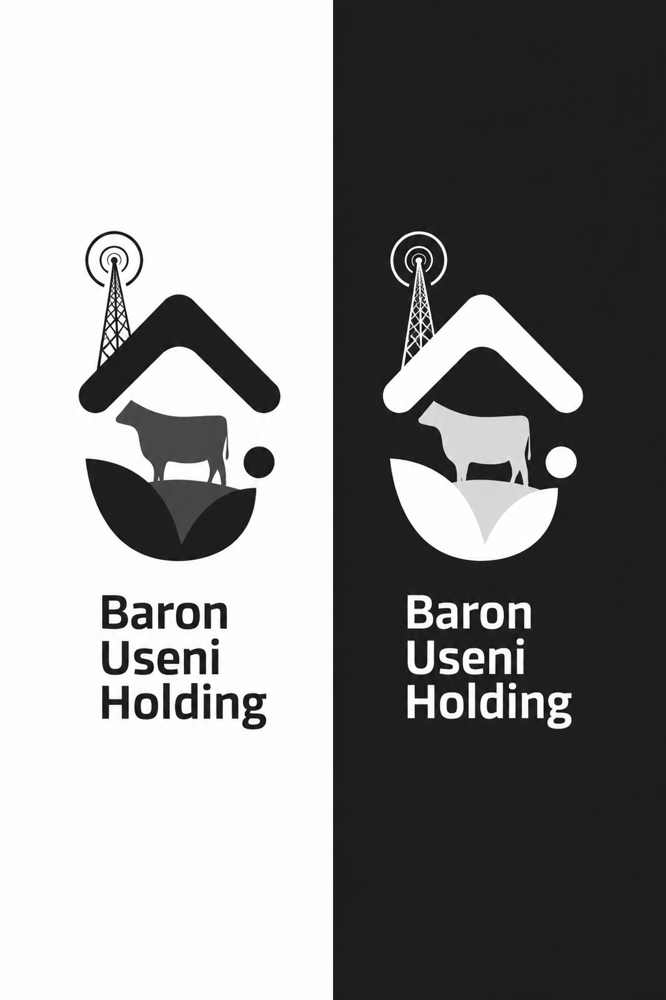

La vie dans nos champs



Agriculture de précision, élevage durable et agro-industrie innovante — Baron Useni Agro-Pastorale réinvente la ferme africaine du XXIe siècle.

"La terre ne ment pas. Elle rend ce que vous lui donnez, multiplié."
Filiale agricole de Baron Useni Holding Sarlu, nous cultivons plus de 5 000 hectares à travers la RDC. Notre mission : faire de l'agriculture le moteur de la souveraineté alimentaire et économique de l'Afrique centrale.
De la semence à l'assiette, nous intégrons chaque maillon de la chaîne de valeur agricole — production, transformation, distribution et export.
Glissez pour explorer nos filières de production. ← →
Maïs, soja, sorgho et légumineuses sur des milliers d'hectares.
Production à grande échelle pour l'alimentation humaine et animale.
Cultures de base transformées en farine et amidon industriel.
Maraîchage intensif sous serre et en plein champ pour les marchés urbains.
Systèmes d'irrigation goutte-à-goutte et solaire pour une agriculture durable.
Un programme d'élevage intégré associant bovins, ovins, volailles et pisciculture pour répondre aux besoins en protéines de toute l'Afrique centrale.
Plus de 8 000 bovins de races améliorées pour la viande et le lait. Suivi vétérinaire permanent et alimentation contrôlée.
Fermes avicoles automatisées — poulets de chair, pondeuses — avec une capacité de 500 000 sujets par cycle.
Bassins d'aquaculture et cages flottantes produisant tilapia et silure sur les cours d'eau de la RDC.
Élevage ovin et caprin adapté aux zones rurales, vecteur de développement communautaire.
Des prairies de la RDC aux marchés d'Afrique
Nous transformons nos récoltes en produits à haute valeur ajoutée, créant des emplois durables et réduisant nos exportation...
Transformation du maïs et du blé en farines alimentaires de qualité supérieure pour les ménages et l'industrie boulangère.
En productionCollecte, pasteurisation et conditionnement du lait local. Production de fromages frais et de yaourts artisanaux.
En développementConserves de légumes, jus de fruits naturels et concentrés de tomates issus de nos cultures biologiques.
Planifié 2026Valorisation des déchets agricoles en biogaz et compost. Production d'électricité verte pour nos sites de production.
Pilote actifChaîne du froid, conditionnement sous vide et distribution B2B vers les grandes surfaces et hôtels de la RDC.
En productionExportation vers l'Angola, le Congo-Brazzaville, la Zambie et le Rwanda. Certification ISO et normes CODEX.
ActifNous combinons tradition africaine et technologies de pointe pour maximiser les rendements tout en préservant nos sols et notre environnement.
Capteurs IoT en temps réel, drones de surveillance et cartographie satellite pour piloter chaque hectare avec précision.
Analyse prédictive des maladies, optimisation des itinéraires d'irrigation et recommandations agronomiques automatisées.
Agrivoltaïsme : panneaux solaires combinés aux cultures pour produire de l'énergie sans sacrifier la surface agricole.
De la graine à l'assiette, chaque produit est traçable en temps réel grâce à notre système de certification blockchain.
École de terrain et application mobile pour former 10 000 agriculteurs locaux aux techniques modernes d'ici 2027.

En 2030, Baron Useni Agro-Pastorale ambitionne de nourrir 10 millions de personnes, de créer 5 000 emplois directs et de devenir le premier exportateur agro-alimentaire de la RDC.
Agriculture de précision, élevage durable et agro-industrie innovante au service de l'Afrique centrale.
Développement et gestion de projets immobiliers résidentiels et commerciaux à travers la RDC.
Transformation et production industrielle pour répondre aux besoins du marché local et régional.
Commerce international facilitant l'importation et l'exportation de produits de qualité.
Production et diffusion de contenu médiatique pour informer et inspirer les populations africaines.
Services IT et télécoms pour connecter l'Afrique et accélérer la transformation numérique.
Services d'impression et reprographie de haute qualité pour tous vos besoins graphiques.
Partenariats, investissements, approvisionnement ou collaboration — notre équipe est à votre écoute pour construire ensemble l'agriculture de demain.